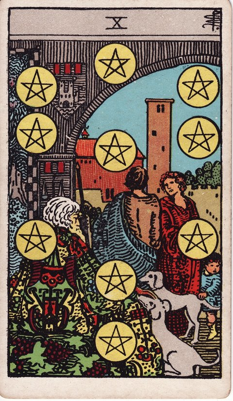

펜타클 · 타로 카드 백과사전
펜타클 10

정방향
키워드: 대물림되는 안정 · 가족의 풍요 · 든든한 기반 · 포근한 유대감 · 대대로 흐르는 정 · 듬직한 밑바탕
조언: 지금 다지는 기반이 다음 세대까지 이어질 수 있다는 마음으로 길게 내다보세요.
연애운
솔로
결혼과 가정을 함께 그려볼 수 있는 진지한 인연을 만날 수 있는 시기입니다. 서두르기보다 서로의 가치관을 충분히 확인하며 관계를 다져가세요.
커플
결혼이나 내 집 마련처럼 오래 함께할 미래를 구체적으로 계획하는 시기입니다. 큰 그림뿐 아니라 구체적인 시기와 예산도 함께 정리해두면 도움이 됩니다.
재물운
소비
가족 전체의 장기적인 살림을 안정적으로 꾸려가는 시기입니다. 정기적으로 가족과 함께 재정 상황을 공유하면 계획이 더 오래 유지됩니다.
투자
자녀 교육비나 노후 자금처럼 먼 미래를 위한 자산을 마련해가는 시기입니다. 목표별로 자금을 나눠 관리하면 필요한 시점에 헷갈리지 않고 쓸 수 있습니다.
취업운
구직
정년까지 오래 다닐 수 있는 안정적인 직장을 찾는 시기입니다. 안정성만큼 회사의 성장 가능성도 함께 살펴보는 게 좋습니다.
이직
복지와 장기 근속이 보장되는 자리로 옮기는 시기입니다. 눈에 보이는 복지뿐 아니라 실제 근무 문화도 미리 알아보세요.
직장운
팀워크
오래도록 흔들리지 않을 견고한 조직 기반을 함께 다지는 시기입니다. 기반을 다질 때 다음 세대 구성원의 의견도 함께 반영해보세요.
개인성과
오랜 시간 몸담으며 회사와 함께 안정적으로 성장하는 시기입니다. 안정적인 성장 속에서도 자신만의 다음 목표를 잊지 않도록 챙겨보세요.
사업운
창업준비
대를 이어갈 수 있는 탄탄한 사업의 기초를 세우는 시기입니다. 기초를 다질 때 승계 방식까지 미리 염두에 두면 나중에 혼란을 줄일 수 있습니다.
운영중
다음 세대에 물려줄 수 있도록 사업 구조를 안정적으로 정비하는 시기입니다. 정비하는 과정을 후계자와 함께 공유하면 이후 인수인계가 더 매끄럽습니다.
학업운
시험준비
당장의 시험을 넘어 평생 쓰일 기초 실력을 탄탄히 다지는 시기입니다. 눈앞의 점수에 조급해하지 말고 기초를 다지는 과정 자체에 집중해보세요.
진로고민
가족의 상황까지 고려한 현실적이고 장기적인 진로를 그려보는 시기입니다. 가족의 기대와 자신의 바람 사이에서 균형을 찾는 대화가 필요합니다.
건강운
신체
가족력까지 고려해 장기적인 건강 계획을 세워가는 시기입니다. 정기 검진 주기를 미리 정해두면 계획을 꾸준히 이어가기 쉬워집니다.
정신
든든한 가족이라는 울타리 안에서 정서적인 안정감을 느끼는 시기입니다. 이 안정감을 당연하게 여기지 말고 가족에게 고마움을 표현해보세요.
대인관계운
새로운 인연
가족 소개로 알게 된 사람과 자연스럽게 집안끼리도 가까워지는 시기입니다. 집안끼리 가까워지는 속도에 부담을 느끼지 말고 자연스럽게 맞춰가세요.
기존 관계
여러 세대를 함께해온 가족, 친지들과의 유대가 깊어지는 시기입니다. 정기적인 모임이나 연락으로 이 유대를 계속 이어가 보세요.
명예운
집안이나 조직의 이름에 걸맞은 오래도록 남을 명예를 쌓는 시기입니다. 이름에 걸맞은 책임감을 잊지 않고 꾸준히 지켜가야 합니다.
이사운
오래 정착해 살 수 있는 든든한 보금자리를 마련하는 시기입니다. 지금의 필요뿐 아니라 앞으로의 변화까지 고려해 공간을 선택해보세요.
자식운
아이에게 물려줄 수 있는 안정적인 기반을 착실히 다져가는 시기입니다. 물질적인 기반만큼 아이가 스스로 설 수 있는 힘도 함께 키워주세요.
역방향
키워드: 재정 갈등 · 흔들리는 기반 · 세대 간 마찰 · 메마른 살림살이 · 냉랭해진 분위기 · 곪아가는 앙금
조언: 감정적으로 대응하기보다 장기적인 관점에서 다시 계획을 세워보세요.
연애운
솔로
양가나 재산 문제 같은 현실적인 부분에서 부담을 느껴 관계를 망설이게 될 수 있는 시기입니다. 부담을 혼자 안고 있기보다 상대와 솔직하게 상황을 나눠보세요.
커플
결혼 자금이나 양가 문제로 의견이 갈리며 갈등이 생길 수 있는 시기입니다. 양가가 함께 만나 조건을 명확히 정리하는 자리를 가지면 갈등을 줄일 수 있습니다.
재물운
소비
가족 간 지출 방식을 두고 의견이 엇갈려 마찰이 생길 수 있는 시기입니다. 기준을 정해 함께 합의해두면 같은 갈등이 반복되지 않습니다.
투자
자녀 학자금이나 노후 자금 계획에 차질이 생겨 다시 짜야 할 수 있는 시기입니다. 우선순위를 다시 정해 감당 가능한 수준으로 계획을 조정해보세요.
취업운
구직
안정적이라 믿었던 회사가 알고 보니 재정적으로 흔들리고 있을 수 있는 시기입니다. 상황을 더 지켜보되 만약을 대비한 다른 선택지도 미리 알아두세요.
이직
당장의 조건에 끌려 옮겼다가 장기적인 안정성을 놓칠 수 있는 시기입니다. 눈앞의 조건뿐 아니라 회사의 장기적인 전망도 함께 따져봐야 합니다.
직장운
팀워크
구조조정 같은 변화로 오래 이어온 팀의 기반이 흔들릴 수 있는 시기입니다. 불안한 상황일수록 팀원들과 정확한 정보를 공유하는 것이 중요합니다.
개인성과
오래 다닌 회사인데도 갑작스러운 인력 감축의 불안에서 자유롭지 못할 수 있는 시기입니다. 불안에 흔들리기보다 만약을 대비해 이력서나 경력 정리를 미리 해두세요.
사업운
창업준비
사업 자금을 가족에게 빌리는 문제로 껄끄러운 대화가 오갈 수 있는 시기입니다. 감정 대신 구체적인 상환 계획을 문서로 정리해 이야기하면 오해가 줄어듭니다.
운영중
가업 승계를 둘러싸고 가족 구성원 사이에 갈등이 불거질 수 있는 시기입니다. 감정싸움으로 번지기 전에 제삼자를 통한 중재를 고려해볼 만합니다.
학업운
시험준비
집안 사정으로 학업을 계속 이어가기가 빠듯해질 수 있는 시기입니다. 장학금이나 지원 제도를 미리 알아보면 부담을 조금 덜 수 있습니다.
진로고민
집안에서 원하는 길과 자신이 원하는 길이 달라 갈등을 겪을 수 있는 시기입니다. 대립하기보다 자신의 생각을 근거와 함께 차분히 설명해보세요.
건강운
신체
집안 내력으로 걱정해온 건강 문제가 겉으로 드러날 수 있는 시기입니다. 걱정만 하기보다 지금이라도 정기 검진을 통해 상태를 정확히 확인해보세요.
정신
집안 대대로 이어져 온 걱정과 부담이 자신에게도 무겁게 느껴질 수 있는 시기입니다. 그 부담을 혼자 짊어지려 하지 말고 가족과 나눠 이야기해보세요.
대인관계운
새로운 인연
복잡한 집안 사정이 얽혀 있는 사람과 가까워지며 부담이 생길 수 있는 시기입니다. 상대의 사정에 휘말리기 전에 자신이 감당할 수 있는 선을 먼저 정해두세요.
기존 관계
재산이나 상속 문제로 오래된 친척이나 지인 관계에 금이 갈 수 있는 시기입니다. 감정적으로 대응하기보다 전문가의 조언을 받아 절차대로 정리하는 편이 낫습니다.
명예운
상속을 둘러싼 다툼이 소문나며 집안 이름에 흠이 갈 수 있는 시기입니다. 감정싸움을 밖으로 드러내기보다 조용히 절차를 밟아 해결하는 편이 낫습니다.
이사운
물려받을 집을 두고 형제자매 사이에 서로 다른 계산이 앞설 수 있는 시기입니다. 감정이 상하기 전에 공정한 기준을 함께 정해두는 대화가 필요합니다.
자식운
부모의 계획이 틀어진 걸 아이가 눈치채며 불안해할 수 있는 시기입니다. 아이가 불안해하지 않도록 상황을 눈높이에 맞춰 솔직하게 설명해주세요.
같은 슈트: 펜타클 에이스 · 펜타클 2 · 펜타클 3 · 펜타클 4 · 펜타클 5 · 펜타클 6 · 펜타클 7 · 펜타클 8 · 펜타클 9 · 펜타클 10 · 펜타클 시종 · 펜타클 기사 · 펜타클 퀸 · 펜타클 킹
홈에서 직접 카드 뽑아보기 ↗